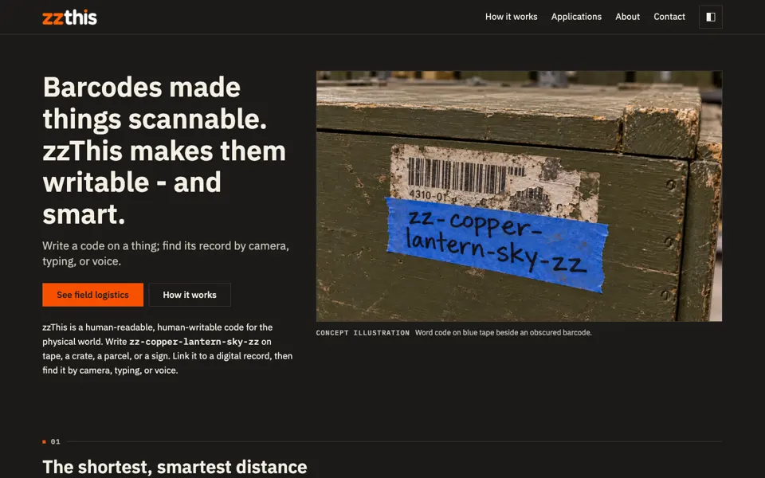
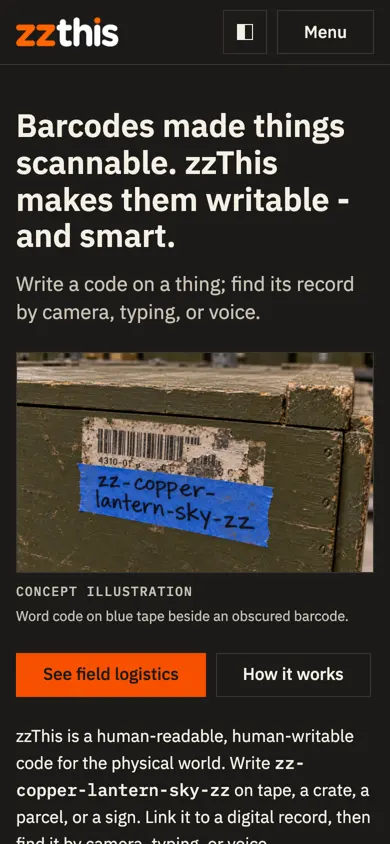

Current site


- Verdict
- Well built and honest, but every section repeats the same shape: numbered eyebrow, heading, grid of equal cards.
- Findings
- 2 critical · 7 major · 4 minor
- Biggest gap
- The core idea, writing a code by hand for a machine to read, never happens on the home page.